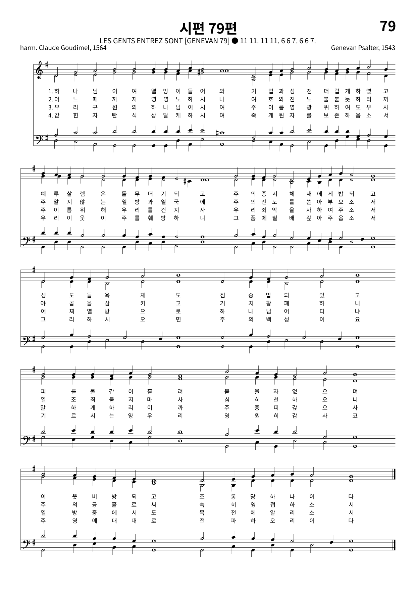

Psalm 79
LES GENTS ENTREZ SONT [GENEVAN 79] · 11 11. 11 11. 6 6 7. 6 6 7.
English title: Thy Land, O God, the Gentiles Have Invaded
Tune: Genevan Psalter, 1543 · Harmony: Claude Goudimel, 1564 · Lyrics: Korean adaptation of Psalm 79 from the Korean Revised Version (AI draft adaptation · not yet theologically reviewed) · 4 stanzas
Score PDF MusicXML (for printing) MusicXML (for accompaniment, with prelude and repeats) Read Psalm 79 (Korean Revised Version)
Score
← Psalm 78C ListAccompaniment (in preparation)Psalm 80 →
Lyrics (Korean)
Stanza 1 (Ps. 1-4)
하나님이여 열방이 들어와
기업과 성전 더럽게 하였고
예루살렘은 돌무더기 되고
주의 종 시체 새에게 밥 되고
성도들 육체도
짐승 밥 되었고
피를 물 같이 흘려
묻을 자 없으며
이웃 비방 되고
조롱 당하나이다
하나님이여 열방이 들어와
기업과 성전 더럽게 하였고
예루살렘은 돌무더기 되고
주의 종 시체 새에게 밥 되고
성도들 육체도
짐승 밥 되었고
피를 물 같이 흘려
묻을 자 없으며
이웃 비방 되고
조롱 당하나이다
Stanza 2 (Ps. 5-8)
어느 때까지 영영 노하시나
여호와 진노 불붙듯 하리까
주 알지 않는 열방과 열국에
주의 진노를 쏟아 부으소서
야곱을 삼키고
거처 황폐하니
열조 죄 묻지 마사
심히 천하오니
주의 긍휼로써
속히 영접하소서
어느 때까지 영영 노하시나
여호와 진노 불붙듯 하리까
주 알지 않는 열방과 열국에
주의 진노를 쏟아 부으소서
야곱을 삼키고
거처 황폐하니
열조 죄 묻지 마사
심히 천하오니
주의 긍휼로써
속히 영접하소서
Stanza 3 (Ps. 9-10)
우리 구원의 하나님이시여
주 이름 영광 위하여 도우사
주 이름 위해 우리를 건지사
우리 죄악을 사하여 주소서
어찌 열방으로
하나님 어디냐
말하게 하리이까
주 종 피 갚으사
열방 중에서도
목전에 알리소서
우리 구원의 하나님이시여
주 이름 영광 위하여 도우사
주 이름 위해 우리를 건지사
우리 죄악을 사하여 주소서
어찌 열방으로
하나님 어디냐
말하게 하리이까
주 종 피 갚으사
열방 중에서도
목전에 알리소서
Stanza 4 (Ps. 11-13)
갇힌 자 탄식 상달케 하시며
죽게 된 자를 보존하옵소서
우리 이웃이 주를 훼방하니
그 품에 칠 배 갚아 주옵소서
그리하시오면
주의 백성이요
기르시는 양 우리
영원히 감사코
주 영예 대대로
전파하오리이다
갇힌 자 탄식 상달케 하시며
죽게 된 자를 보존하옵소서
우리 이웃이 주를 훼방하니
그 품에 칠 배 갚아 주옵소서
그리하시오면
주의 백성이요
기르시는 양 우리
영원히 감사코
주 영예 대대로
전파하오리이다